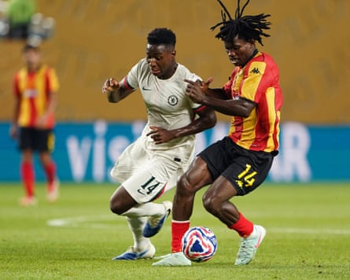

M oisés Caicedo was still going strong. There were 108 minutes on the clock at the Bank of America Stadium – not taking into account the lengthy weather delay – when the Chelsea midfielder won possession in Benfica’s half, found Cole Palmer and surged forward.
Palmer advanced towards a back-pedalling, understaffed defence. He waited for support before finding the overlapping Caicedo. Benfica, tiring with 10 men, were defeated by Caicedo’s power. The 23-year-old shot, Anatoliy Trubin made a mess of his save and the ball squirmed loose to Christopher Nkunku to score the goal that sent Enzo Maresca’s side into the quarter-finals of the Club World Cup.
One problem, though: Caicedo will be serving a one-game ban when Chelsea meet Palmeiras in Philadelphia on Friday night. One momentary lapse of judgment could prove costly. Caicedo had to be smarter when he questioned a refereeing decision in the second half against Benfica. He took his protest too far and received a booking for dissent, leaving Maresca with a dilemma.
Caicedo is Chelsea’s midfield linchpin – nobody mocks his £115m fee now – and his absence is significant. The Ecuadorian started every Premier League game last season, becoming the first Chelsea player to do so since César Azpilicueta in the 2018-19 campaign, and his durability is not in doubt.
Stretch it out and he has not been forced to miss a game since illness kept him out of a 2-1 defeat to Wolves on Christmas Eve in 2023. Before that, the only other times when he has not started in the league were as a late substitute during a 4-1 defeat to Newcastle in November 2023 after returning late from international duty and when unavailable for a goalless draw against Bournemouth in September 2023.
It has become common to see Caicedo run off an injury after coming off worse in a 50-50 challenge. He needed treatment on a blow to his knee against Benfica but still played on. No wonder Maresca has leant so heavily on him. The head coach does not like to go into key games without the former Brighton midfielder.
There was no question of Maresca resting Caicedo in the league when he was one yellow card away from a two-match ban during last season’s run-in. Caicedo was trusted to stay out of trouble, even though he plays on the edge and is never shy to go in hard when the ball is there to be won.
But indiscipline has cost him in the United States. Chelsea, who have added João Pedro to their squad after signing the forward from Brighton , have to react. Caicedo plays when it matters. Maresca rested him in the Carabao Cup and in easy Conference League games but never when the stakes were high. After all, Caicedo started and scored in the Conference League final victory over Real Betis . Being given a breather against Espérance last week is irrelevant given that Caicedo has started three of four games at the Club World Cup.
Caicedo’s importance is vast. His long-term cover is Dário Essugo, who has just joined from Sporting . Essugo is inexperienced and has only made two substitute appearances for his new side. It would be a huge gamble for Maresca to select the combative 20-year-old against Palmeiras.
Dário Essugo (left) has made only two substitute appearances for Chelsea so it would be gamble to field the combative 20-year-old against Palmeiras.Photograph: Will Oliver/EPA
Maresca is likely to find other ways to compensate for losing his best tackler. It is frustrating given that the Benfica game was the first time Caicedo, Roméo Lavia and Enzo Fernández had started together in midfield since the opening weekend of last season. The likeliest solution seems to be shifting Fernández into a deeper role.
However, there was some concern after the brilliant but fragile Lavia was not pictured in training earlier this week. There is no replacement for Lavia’s control and ability to conduct play. Chelsea need him to be ready for his fourth start of the tournament. Essugo is raw. Andrey Santos is viewed as a No 8 and is learning Maresca’s style. Reece James impressed at right-back against Benfica but struggled in central midfield when Chelsea lost to Flamengo in Philadelphia during the group stage.
That was a bad afternoon. Nicolas Jackson was sent off – the striker has completed a two-game ban – and Chelsea failed to cope with Flamengo’s flair, adventure and passion. At least they face Palmeiras knowing not to underestimate Brazilian opposition.
Palmeiras remain unbeaten and will be backed by a large following at Lincoln Financial Field. They have tried to calm the hype around Estêvão, the exciting young winger who joins Chelsea after the tournament . Their manager, Abel Ferreira, has won 10 trophies during his five years in the job, developed young talent and turned down lucrative offers from clubs in Europe and Saudi Arabia because of his desire to make Palmeiras world champions for the first time.
Chelsea will have to be at their best. There has been talk of a favourable route to the final – they avoided a last-16 tie against Bayern Munich and were expected to face Manchester City in the last four, only for Al-Hilal to shock Pep Guardiola’s side – but there is no room for complacency against Palmeiras. It is a repeat of the 2022 final , when Thomas Tuchel’s Chelsea collected the final trophy of the Roman Abramovich era by beating Ferreira’s punchy Palmeiras side in extra time, and it will not be easy without Caicedo.